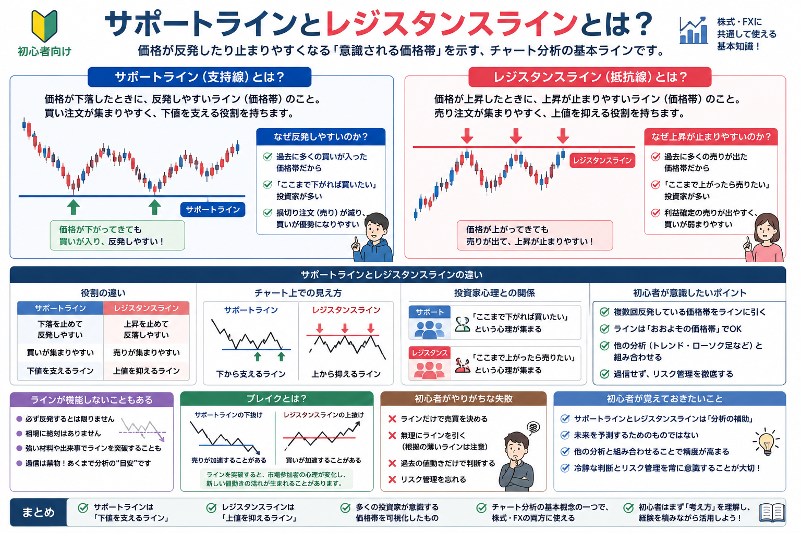

投資手法・チャート分析の基礎
サポートラインとレジスタンスラインとは？
チャートには、価格が止まりやすい場所や反発しやすい価格帯があります。 その代表的な考え方が、サポートライン（支持線）とレジスタンスライン（抵抗線）です。 この記事では、株式投資やFXのチャート分析でよく使われる基本概念を、初心者向けに中立的に整理します。
Introduction
チャートには価格が止まりやすい場所がある

チャートを見ていると、同じような価格帯で下げ止まったり、上昇が止まったりする場面があります。 これは、その価格帯を多くの投資家が意識しているため、買い注文や売り注文が集まりやすくなることがあるからです。
ただし、ラインは未来を確実に予測する道具ではありません。 まずは「多くの人が意識しやすい価格帯を整理するための補助線」として理解することが大切です。 チャートの基本を先に確認したい場合は、株チャートの見方を初心者向けに解説も参考になります。
Support Line
サポートラインとは？
サポートラインとは、価格が下落した際に反発しやすいと考えられるラインのことです。 日本語では「支持線」とも呼ばれます。
意味
下値を支えやすい価格帯
過去に価格が下げ止まった場所は、次に下落したときも意識されやすくなります。
注文
買い注文が集まりやすい
「このあたりなら買いたい」と考える人が増えると、反発のきっかけになる場合があります。
注意
必ず止まる線ではない
悪材料や強い売りが出ると、サポートラインを下抜けることもあります。
サポートラインのイメージ
たとえば、ある銘柄や通貨ペアが何度も1,000円付近で下げ止まっている場合、投資家は「1,000円付近は買われやすい場所かもしれない」と考えます。 このように、過去に何度か反発した価格帯を結んだものがサポートラインの基本的なイメージです。 ローソク足の意味を合わせて見ると、反発の強さや迷いも読み取りやすくなります。詳しくはローソク足の見方を初心者向けに解説で整理しています。
なぜ反発しやすいのか？
サポートライン付近では、過去に買って利益が出た人、安くなったら買いたい人、売りポジションを利益確定したい人など、複数の思惑が重なりやすくなります。 その結果、買い圧力が強まり、価格が反発することがあります。
Resistance Line
レジスタンスラインとは？
レジスタンスラインとは、価格が上昇した際に上昇が止まりやすいと考えられるラインのことです。 日本語では「抵抗線」とも呼ばれます。
意味
上値を抑えやすい価格帯
過去に上昇が止まった価格帯は、次の上昇時にも意識されやすくなります。
注文
売り注文が集まりやすい
「このあたりで利益確定したい」と考える人が増えると、上昇が止まりやすくなる場合があります。
注意
突破されることもある
買いの勢いが強い場合、レジスタンスラインを上抜けて上昇が続くこともあります。
レジスタンスラインのイメージ
たとえば、価格が何度も1,200円付近で上昇を止められている場合、投資家は「1,200円付近では売りが出やすいかもしれない」と考えます。 このような価格帯を結んだものが、レジスタンスラインの基本的なイメージです。
なぜ上昇が止まりやすいのか？
レジスタンスライン付近では、利益確定の売り、過去に高値で買った人の戻り売り、新規の売り注文などが重なりやすくなります。 そのため、価格が一時的に押し戻されることがあります。
Difference
サポートラインとレジスタンスラインの違い
| 項目 | サポートライン | レジスタンスライン |
|---|---|---|
| 別名 | 支持線 | 抵抗線 |
| 役割 | 下落時に価格を支えやすい | 上昇時に価格を抑えやすい |
| 集まりやすい注文 | 買い注文 | 売り注文 |
| 心理 | 安くなったら買いたい | 上がったら売りたい |
| 注意点 | 下抜けると下落が強まることがある | 上抜けると上昇が強まることがある |
役割の違い
サポートラインは下値を支える目安、レジスタンスラインは上値を抑える目安です。 どちらも「価格がそこで必ず止まる」という意味ではなく、投資家が注目しやすい場所を整理するための線です。
チャート上での見え方
サポートラインはローソク足の安値付近を結ぶことが多く、レジスタンスラインは高値付近を結ぶことが多いです。 ただし、細かく引きすぎると判断が複雑になるため、初心者は「何度も意識されている大まかな価格帯」を見るところから始めると理解しやすくなります。
投資家心理との関係
ライン分析は、単なる線引きではなく投資家心理を考える作業でもあります。 「ここまで下がれば買いたい」「ここまで上がれば売りたい」という心理が集まると、その価格帯がチャート上で目立ちやすくなります。
初心者が意識したいポイント
初心者は、ラインを細かく正確に引くことよりも、なぜその価格帯が意識されているのかを考えることが大切です。 相場全体の状態を確認するには、トレンド相場とレンジ相場の違いとは？も合わせて読むと流れをつかみやすくなります。
Caution
ラインが機能しないこともある
- サポートラインやレジスタンスラインで必ず反発するわけではない
- 相場に絶対はなく、ラインを突破することもある
- ニュース・決算・経済指標・急な需給変化で値動きが大きくなることがある
- ラインだけを根拠に売買を決めるのは危険
ライン分析は便利ですが、過信は禁物です。 とくに株式投資では決算や材料、FXでは経済指標や金利見通しなどによって、チャート上の目安を大きく超えて動くこともあります。
Break
ブレイクとは？
ブレイクとは、これまで意識されていたサポートラインやレジスタンスラインを価格が突破することです。 サポートラインを下抜ける場合と、レジスタンスラインを上抜ける場合があります。
サポートラインを下抜ける
これまで買われやすかった価格帯を下回ることで、売りが強まりやすくなる場合があります。
レジスタンスラインを上抜ける
これまで上値を抑えていた価格帯を超えることで、買いの勢いが続きやすくなる場合があります。
心理が変わる
「ここで止まるはず」という見方が崩れると、市場参加者の判断が一気に変わることがあります。
ブレイクは売買判断で注目されやすい場面ですが、だましの動きもあります。 チャートのサインについては、チャートのサインを初心者向けに解説も参考になります。
Beginner Mistakes
初心者がやりがちな失敗
ラインだけで売買を決める
ラインは分析補助であり、売買を決める唯一の根拠ではありません。相場状況、資金管理、損切り位置なども合わせて考える必要があります。
無理にラインを引く
どんなチャートにも線を引こうとすると、都合のよい解釈になりやすくなります。何度も意識されている価格帯を大まかに見ることが大切です。
過去の値動きだけで判断する
過去のチャートは参考になりますが、未来を保証するものではありません。材料や相場環境が変われば、同じ価格帯でも反応が変わることがあります。
リスク管理を忘れる
ラインで反発すると考えても、想定と違う方向へ動くことはあります。事前に損失許容額や撤退ルールを決めておくことが重要です。
売買判断の考え方を深めたい場合は、エントリータイミングの考え方とは？、リスク管理を整理したい場合は投資ルールを決める重要性とは？も確認しておきましょう。
Key Point
初心者が覚えておきたいこと
-
ラインは分析補助として使う
サポートラインとレジスタンスラインは、価格が意識されやすい場所を整理するための補助線です。
-
未来を確実に予測するものではない
ラインがあるから必ず反発する、必ず止まる、という考え方は避けましょう。
-
他の分析と組み合わせる
ローソク足、トレンド、出来高、ニュース、資金管理などと合わせて総合的に見ることが大切です。
-
冷静な判断とリスク管理を意識する
想定と違う動きになった場合の対応を、取引前に決めておくと感情的な判断を減らしやすくなります。
Summary
まとめ
サポートラインは下値を支える目安となる支持線、レジスタンスラインは上値を抑える目安となる抵抗線です。 どちらもチャート分析の基本概念の一つであり、多くの投資家が意識する価格帯を考えるうえで役立ちます。
ただし、ラインは未来を確実に予測するものではありません。 初心者はまず、線を引くこと自体よりも「なぜその価格帯が意識されるのか」を理解することが大切です。 利益と損失のバランスを考えたい場合は損小利大とは？、売る場面まで含めて考えたい場合は出口戦略とは？も参考になります。
FAQ
よくある質問
-
Q. サポートラインとは何ですか？
サポートラインとは、価格が下落したときに反発しやすいと考えられる価格帯を示す線です。支持線とも呼ばれます。 -
Q. レジスタンスラインとは何ですか？
レジスタンスラインとは、価格が上昇したときに上昇が止まりやすいと考えられる価格帯を示す線です。抵抗線とも呼ばれます。 -
Q. ラインは必ず機能しますか？
必ず機能するわけではありません。相場状況やニュース、参加者心理の変化によってラインを突破することもあります。 -
Q. 初心者でもライン分析は使えますか？
考え方自体は初心者でも学べます。ただし、ラインだけで売買を決めず、相場状況やリスク管理と組み合わせて使うことが大切です。
一般ユーザー目線の体験でおすすめの会社をご紹介

ご利用にあたっての注意事項
本記事は情報提供を目的としており、投資の勧誘を目的としたものではありません。株式・投資信託・外国証券・FX等の取引は元本保証がなく、相場変動等により損失が生じる場合があります。取引開始前に、契約締結前交付書面や商品説明書、目論見書等を必ずご確認のうえ、ご自身の判断と責任でお取引ください。